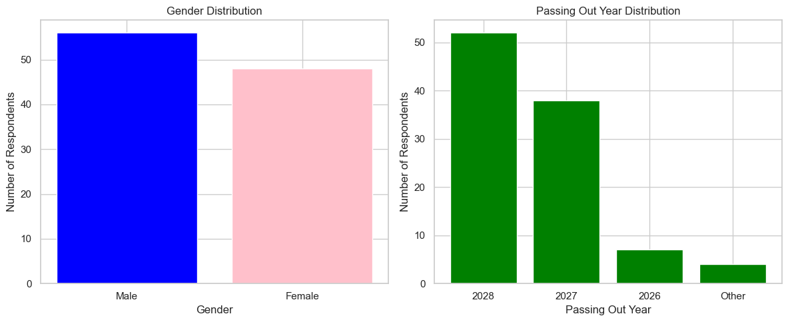
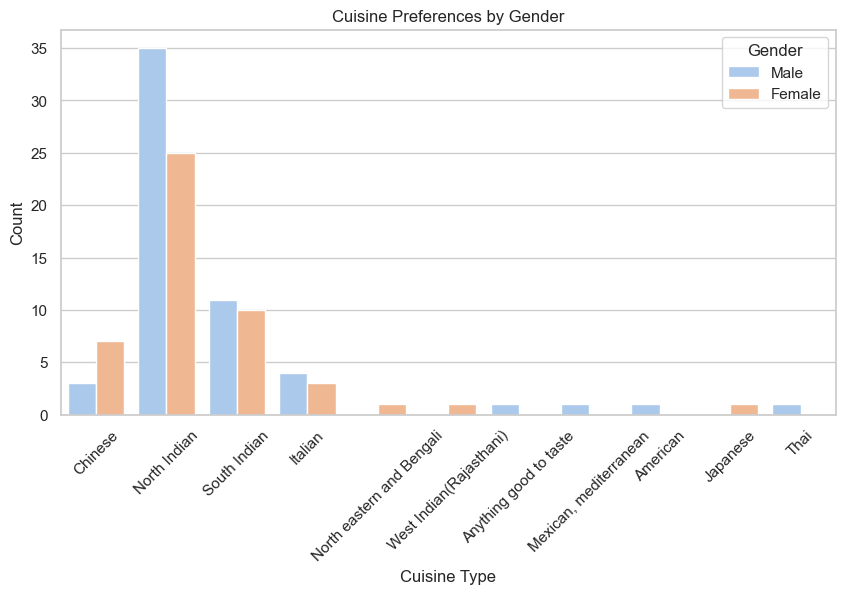
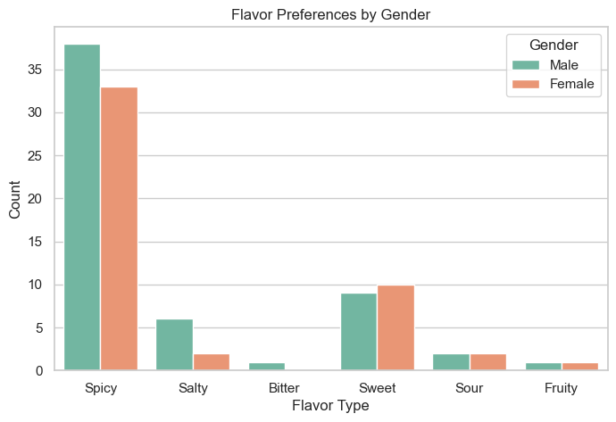

It all started on a lazy evening in the IIT Bhilai cafeteria, where a heated debate was brewing—not about academics or technology, but about food...
Nothing beats a plate of butter naan with rich, creamy paneer butter masala!
one declared.
You haven't lived until you've had a perfectly crispy dosa with coconut chutney
, argued another.
Forget all that! A cheesy slice of pizza is the true comfort food!
a third countered.
Some swore by the fiery goodness of spicy dishes, while others preferred the delicate balance of sweet and savory flavors. Amidst the chaos, I had a realization—why not settle this once and for all with real data?
Was North Indian cuisine truly the undisputed king? Did everyone really prefer spicy food? And what about gender-based differences?
Determined to uncover the truth, a Google Form was designed, capturing people's genuine food preferences across IIT Bhilai and beyond.
Survey Highlights:
Once the numbers were in, the findings were both expected and surprising. North Indian cuisine reigned supreme with over 56% of votes, followed by South Indian at 20%, proving that butter-laden curries and tandoori delights still ruled most hearts. Spicy food dominated preferences at a staggering 68%!
Men were significantly more likely to choose spicy foods (75%) than women (58%). Women leaned more towards sweet flavors.
 These insights can prove very helpful for a new cafe building up on campus and emerging food services. The data can influence food industry strategies, health recommendations, and marketing campaigns...
